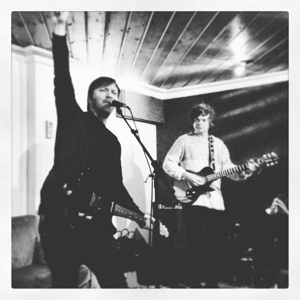
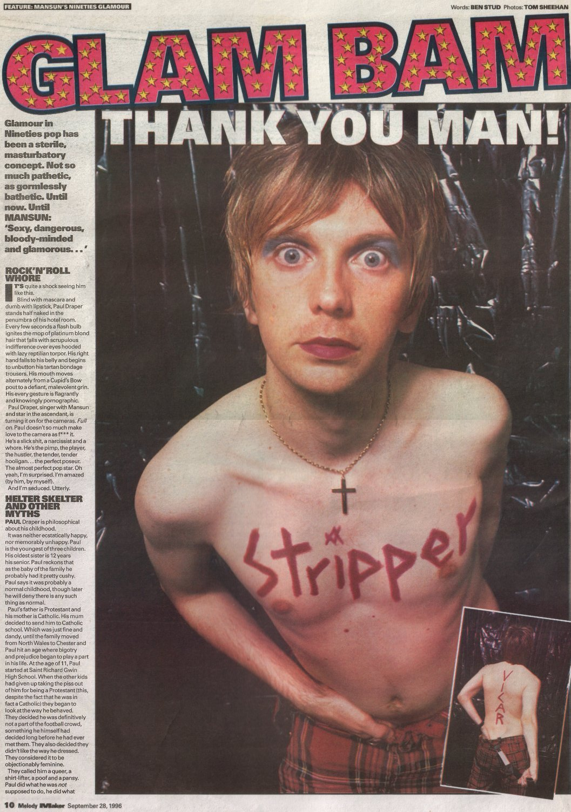
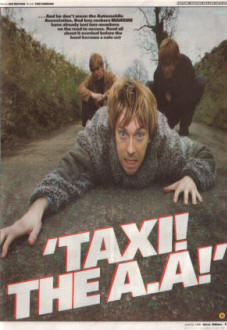

Studio & Live Session
Paul Draper on guitar and vocals (indexpic.jpg).
Digital Liner Notes • Live Music Preservation • Collector Archive
Welcome to the definitive archival gateway for Mansun and Paul Draper. Preserving rare news logs, original magazine spreads, unreleased studio demos, and live bootlegs with a museum-grade collector's approach.





The complete surviving chronological log of dispatches, studio diaries, track title announcements, and direct collaborator updates from 2006 to 2012. Includes instant search and year filters.
Recovered music press features, Q&As, and in-depth magazine transcripts covering the release of Attack of the Grey Lantern, Six, Little Kix, and Paul's solo evolution.
High-resolution print scans of full magazine spreads from Melody Maker, Select, and Rock Sound. View them page-by-page in our immersive full-screen reader.
52 catalogued tracks featuring the Amsterdam Paradiso 1998 concert, Grind demos, Steve Heaton tapes, Unreleased tracks like South Of The Painted Hall, and 1-click YouTube stream embeds.